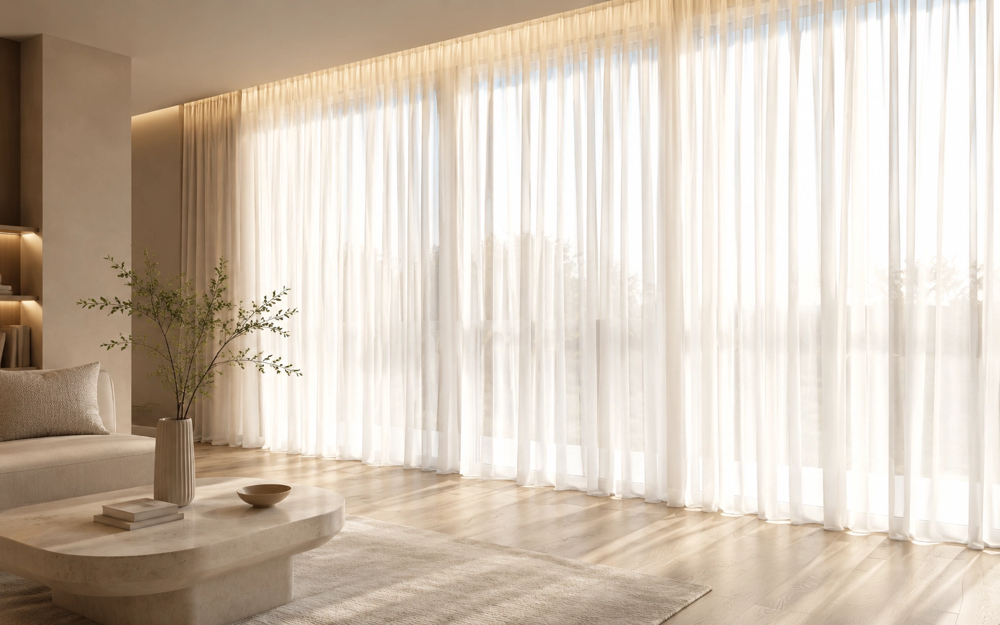
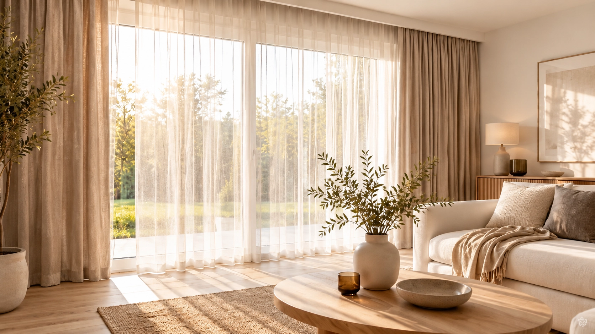
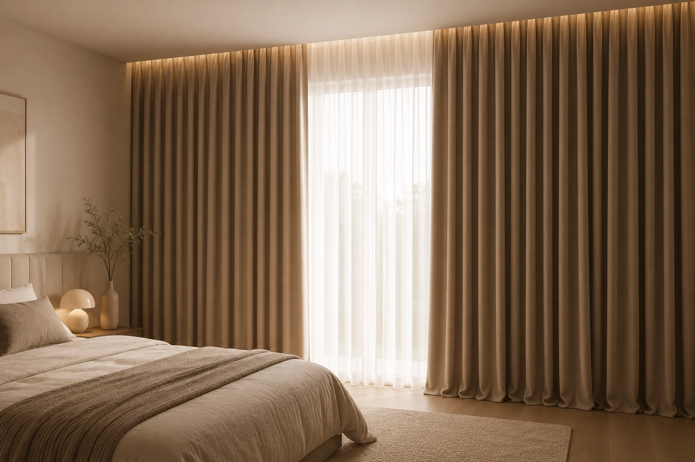
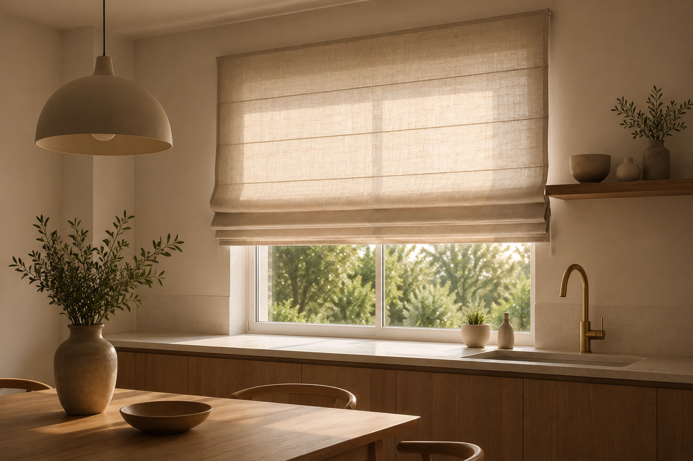
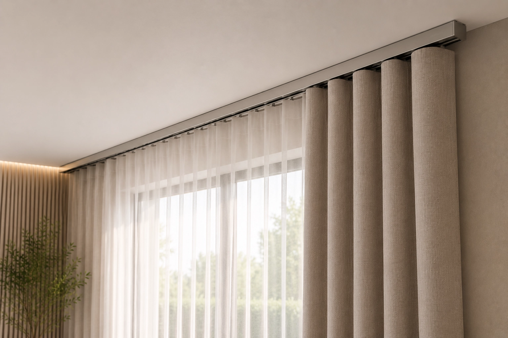
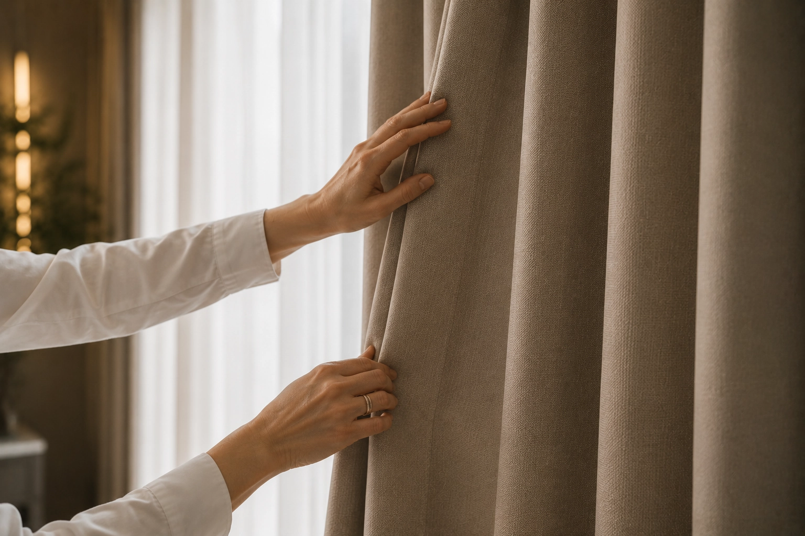
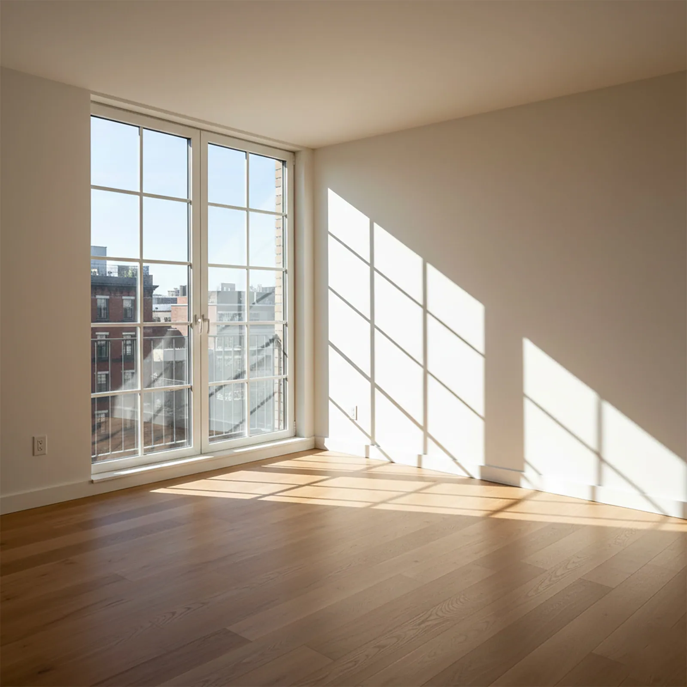
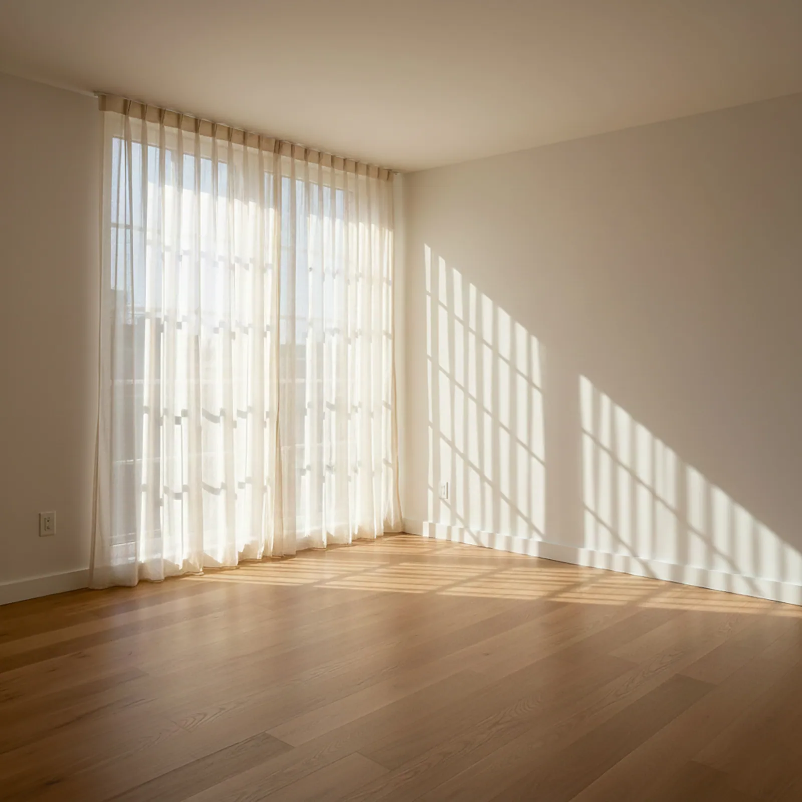
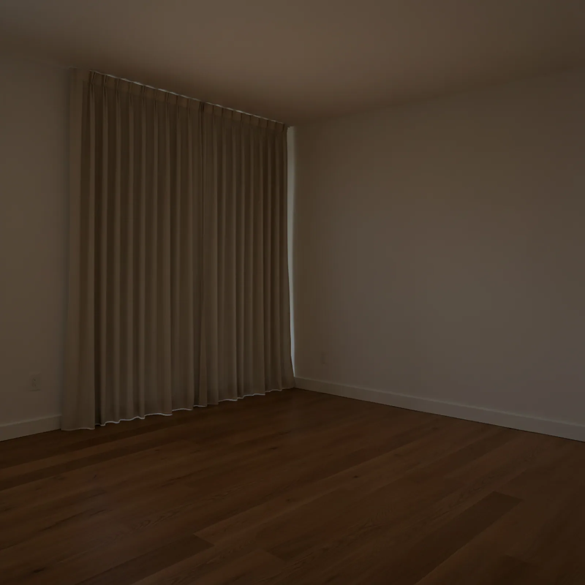

Záclony
Zjemní denní světlo, zútulní a příjemně odlehčí interiér.

Zobrazit orientační ceny →
Navrhujeme a realizujeme vnitřní stínění, které přirozeně navazuje na interiér a respektuje každodenní potřeby.

Jsme česká rodinná firma a zakládáme si na kvalitě a precizním provedení. Máme více než dvacet let zkušeností s látkami, šitím i technikou. Navrhujeme stínění na míru od první konzultace až po finální realizaci tak, aby výsledek fungoval dlouhodobě. Každý detail ladíme podle vás. Respektujeme vaše potřeby a přizpůsobujeme se tomu, co je pro vás důležité. Někdo chce klid a měkké světlo, jiný funkční zatemnění nebo jednoduché řešení bez zbytečností. Vždy hledáme cestu, která dává smysl právě vám.
Návrh začíná v interiéru. Každá vrstva má svoji roli.
Zjemní denní světlo, zútulní a příjemně odlehčí interiér.

Pomohou se zatemněním, akustikou i pocitem tepla a klidu.

Praktické řešení pro přesnou regulaci světla a čistý vzhled.

Kolejnice, garnýže a řešení navržená podle prostoru.

Sundání, vyčištění, vyžehlení a opětovné zavěšení našich realizací.

Správně navržené stínění mění víc než jen okno. Ovlivňuje světlo během dne, soukromí večer i celkový dojem z interiéru. Rozdíl mezi prostorem bez stínění a promyšleným řešením bývá větší, než čekáte.



Rádi vám ukážeme, co dává smysl a proč.
Každý prostor má jiné světlo, proporce i potřeby. Návrh proto vzniká vždy podle konkrétního interiéru.
Známe materiály, technická řešení i detaily, které rozhodují o výsledku.
Kvalita zpracování a technické provedení rozhodují o tom, jak bude stínění fungovat i po letech.
Praha a okolí. Konzultace přímo ve vašem interiéru. Návrh, výroba i montáž na míru.